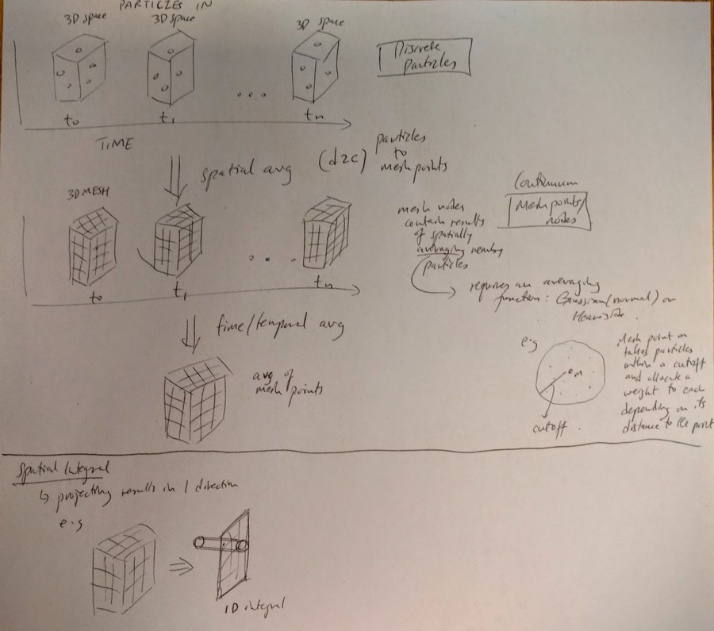
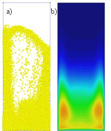

Projects
DEMA
VELaSSCo - Big Data and HPC
VELaSSCo aims to provide new visual analysis methods for large-scale simulations serving the petabyte era and preparing the exabyte era. It does this by adopting Big Data tools and architectures for the engineering and scientific community and by leveraging new ways of in-situ processing for data analytics and hardware accelerated interactive visualization.
My main involvement relates to the implement of core analytics queries as MapReduce jobs. One example of such queries is the discrete-to-continuum (D2C) transform.
 ORIGIN - Improving weather forecast using machine learning
ORIGIN is a sophisticated intelligent ICT system for the management of energy in communities. I worked on parallelising and optimising a machine learning algorithm that learns and makes localised short-term weather predictions from large datasets. The prediction model is generated after extensive processing of data from various sources to learn an accurate model using feature selection, correlation analysis and regression.